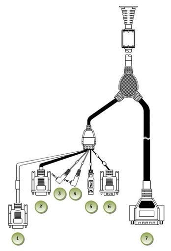
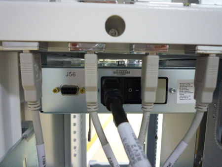

| NOTE: | Do not connect the GSCB - Black DB-25 connector (Item 7) to J20 on console rear bulkhead. It should be directly connected to TGP Gantry Cable. |
Illustration 6: GSCB Connections

| Item | Destination | |
| 1 | GSCB - Black DB-9 (Male) Connector | Power Box J56 |
| 2 | GSCB - Gray DB-9 (Female) Connector | Host Computer Serial Port |
| 3 | GSCB - Green Audio Connector | Host Computer Audio Out (Green) |
| 4 | GSCB - Blue Audio Connector | Host Computer Audio In (Blue) |
| 5 | GSCB - USB Connector | NOT Used on GOC6.6 VCT Console |
| 6 | GSCB - Black DB-9 (Female) Connector | Host Computer DIP Serial Port |
| 7 | GSCB - Black DB-25 (Male) Connector | TGP Gantry Cable |
Illustration 7: J56 Connector on Power Box
